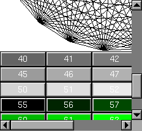

Class Hierarchy
Fl_Group
|
+----Fl_Scroll
Include Files
#include <FL/Fl_Scroll.H>
Description
This container widget lets you maneuver around a set of widgets much
larger than your window. If the child widgets are larger than the size
of this object then scrollbars will appear so that you can scroll over
to them:

If all of the child widgets are packed together into a solid
rectangle then you want to set box() to FL_NO_BOX or
one of the _FRAME types. This will result in the best output.
However, if the child widgets are a sparse arrangment you must set
box() to a real _BOX type. This can result in some
blinking during redrawing, but that can be solved by using a
Fl_Double_Window.
This widget can also be used to pan around a single child widget
"canvas". This child widget should be of your own class, with a
draw() method that draws the contents. The scrolling is done by
changing the x() and y() of the widget, so this child
must use the x() and y() to position it's drawing.
To speed up drawing it should test fl_push_clip()
.
Another very useful child is a single
Fl_Pack, which is itself a group that packs it's children
together and changes size to surround them. Filling the Fl_Pack
with Fl_Tabs groups (and then putting
normal widgets inside those) gives you a very powerful scrolling list
of individually-openable panels.
Fluid lets you create these, but you can only lay out objects that
fit inside the Fl_Scroll without scrolling. Be sure to leave
space for the scrollbars, as Fluid won't show these either.
You cannot use Fl_Window as a child of this since the
clipping is not conveyed to it when drawn, and it will draw over the
scrollbars and neighboring objects.
Fl_Scroll widgets should not be nested. Having an Fl_Scroll
inside another Fl_Scroll may result in drawing errors when resizing.
Methods
Creates a new Fl_Scroll widget using the given position,
size, and label string. The default boxtype is FL_NO_BOX.
The destructor also deletes all the children. This allows a
whole tree to be deleted at once, without having to keep a pointer to
all the children in the user code. A kludge has been done so the
Fl_Scroll and all of it's children can be automatic (local)
variables, but you must declare the Fl_Scrollfirst, so
that it is destroyed last.
By default you can scroll in both directions, and the scrollbars
disappear if the data will fit in the area of the scroll. type()
can change this:
- 0 - No scrollbars
- Fl_Scroll::HORIZONTAL - Only a horizontal scrollbar.
- Fl_Scroll::VERTICAL - Only a vertical scrollbar.
- Fl_Scroll::BOTH - The default is both scrollbars.
- Fl_Scroll::HORIZONTAL_ALWAYS - Horizontal scrollbar
always on, vertical always off.
- Fl_Scroll::VERTICAL_ALWAYS - Vertical scrollbar always on,
horizontal always off.
- Fl_Scroll::BOTH_ALWAYS - Both always on.
This is used to change what side the scrollbars are drawn on. If the
FL_ALIGN_LEFT bit is on, the vertical scrollbar is on the left.
If the FL_ALIGN_TOP bit is on, the horizontal scrollbar is on
the top. Note that only the alignment flags in scrollbar are
considered. The flags in hscrollbar however are ignored.
Gets the current horizontal scrolling position.
Gets the current vertical scrolling position.
Sets the upper-lefthand corner of the scrolling region.